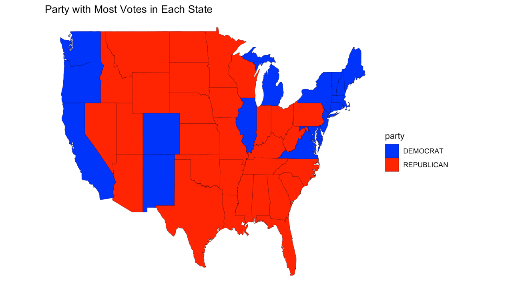

Some of the work from my blogging assignments
This graph was inspired from a psychological study. The goal of the assignment was to replicate the graph from the study.
The dataset was obtained from TidyTuesday package. The dataset pertains to the House Elections results. I generated the US map to highlight the states in which Democrats or Republicans won. The important thing during this exercise was to be mindful of the exclusion of ALaska and Hawaii in the map.
Succesfully coded the rolling dice game as part of the Final Exam Challenge.